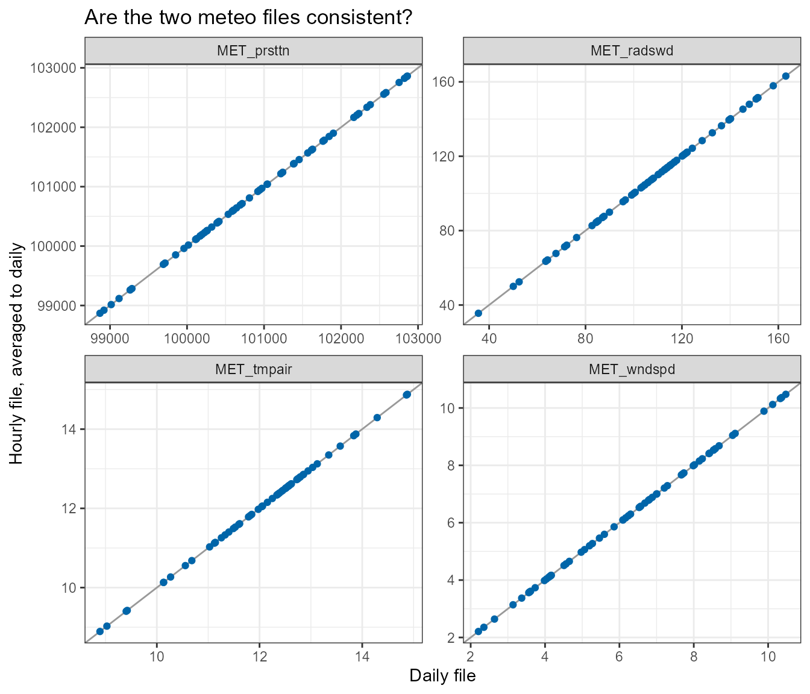
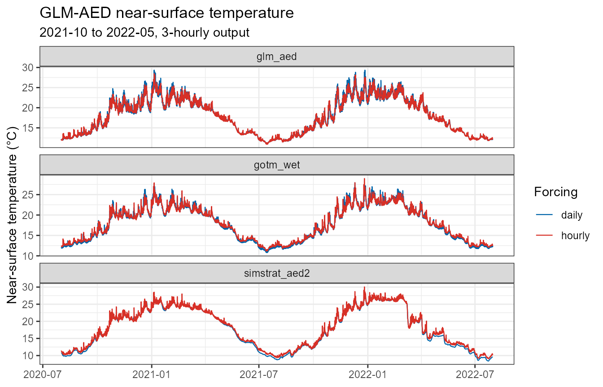
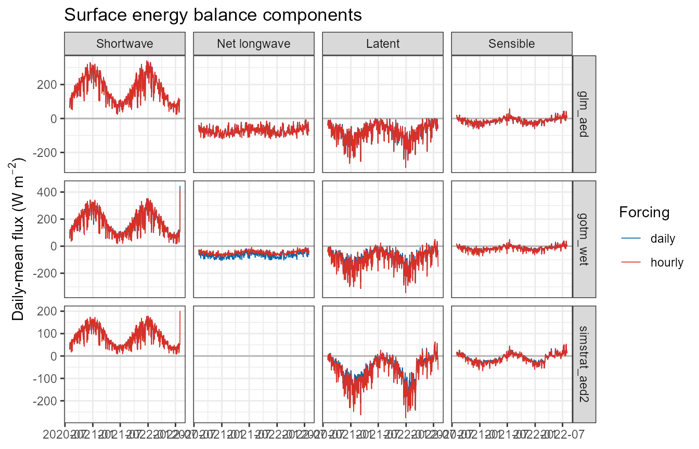
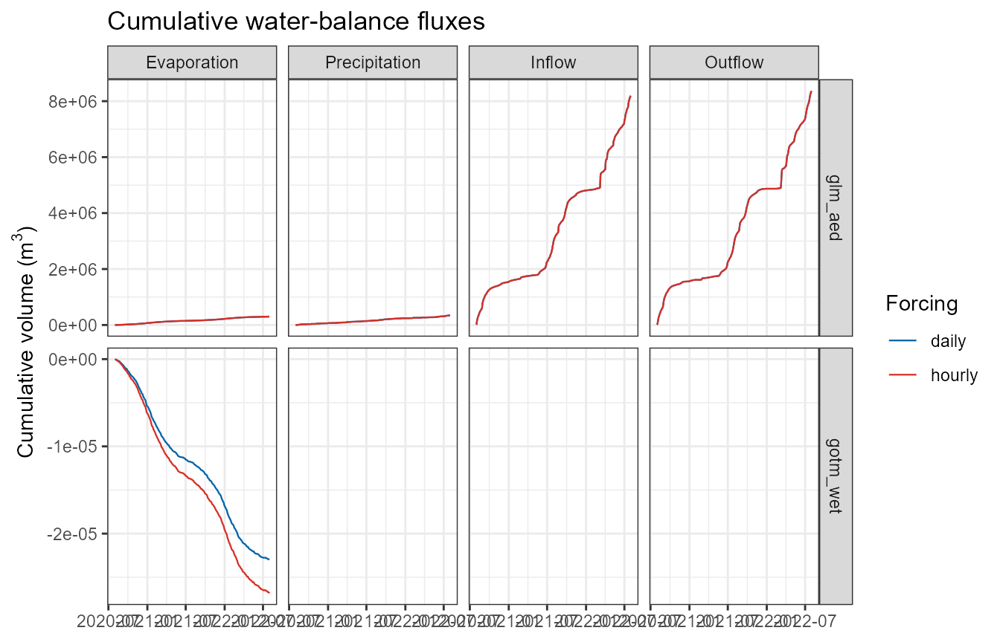
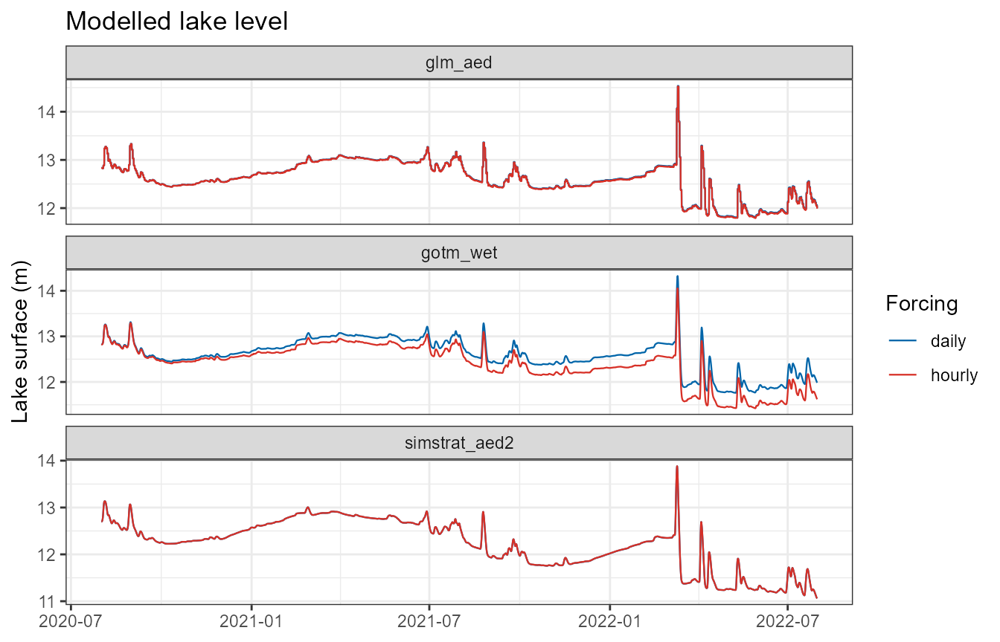
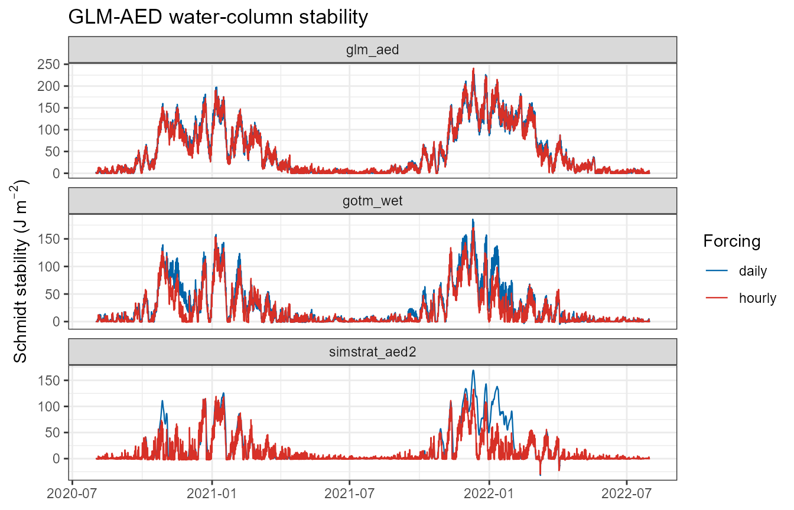
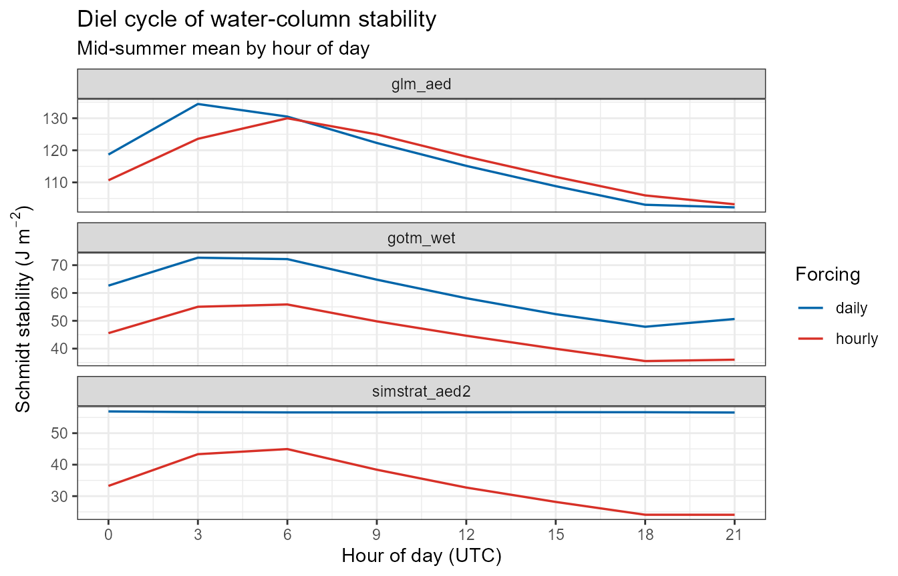
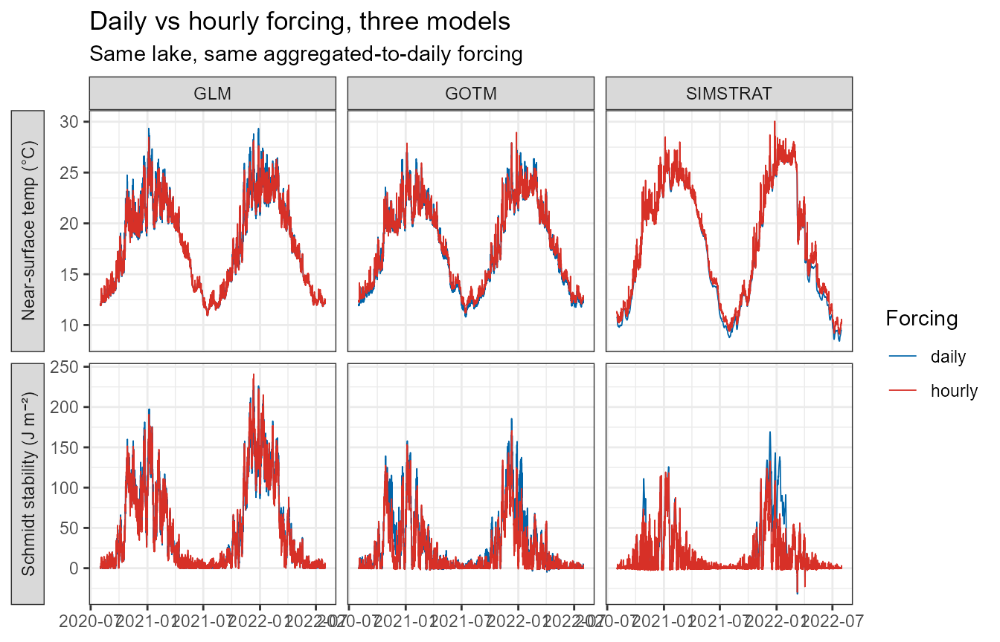

Hourly vs daily meteorological forcing
Source:vignettes/articles/hourly-vs-daily-met.Rmd
hourly-vs-daily-met.RmdIntroduction
AEME accepts meteorological forcing at any regular time step. The two common choices are daily (one row per day, the historical default) and hourly (sub-daily, e.g. ERA5 at native resolution). This article explains what changes when you switch from daily to hourly forcing, and — importantly — how that change is expressed differently by each of the three hydrodynamic models (GLM-AED, GOTM-WET, Simstrat-AED2).
The single most important thing to understand:
AEME never temporally disaggregates forcing. It does not invent sub-daily structure from daily inputs. Sub-daily output therefore requires sub-daily input. What daily-vs-hourly changes is (a) how much real sub-daily variability the model sees, and (b) how each model fills the gaps between the timestamps you supplied.
To temporally disaggregate forcing, use the metscale package, which can generate sub-daily forcing from daily inputs.
A second point that is easy to miss:
The meteorological time step is not the model integration time step. Even a “daily” AEME run integrates internally at
time(aeme)$time_step(3600 s by default) for GLM and GOTM, and at 300 s for Simstrat. Daily forcing does not make the physics daily — it makes the forcing daily.
What the daily-vs-hourly switch controls
The switch is detected automatically by is_subdaily(),
which looks at the median spacing between successive timestamps in the
meteo Date column. A Date vector, or a
POSIXct vector that is entirely at midnight, is treated as
daily; anything with a median spacing below 24 h is sub-daily.
library(AEME)
# daily_met <- read.csv(
# system.file("extdata/lake/data/meteo.csv", package = "AEME")
# )
hourly_met <- readr::read_csv(
system.file("extdata/lake/data/meteo_era5_hr.csv.gz", package = "AEME")
)
daily_met <- collapse_met_daily(hourly_met, precip = "sum")
aeme_daily <- add_met(aeme, met = daily_met)
aeme_hourly <- add_met(aeme, met = hourly_met)To get sub-daily output as well, raise
output_time_step (it defaults to 86400 s and must be
>= time_step). It can be set as part of
set_time():
aeme_hourly <- set_time(
aeme_hourly,
start = "2021-07-01 00:00:00",
stop = "2022-07-01 00:00:00",
spin_up = 35,
output_time_step = 3600 # hourly output; omit for daily output from hourly forcing
)or, if the run period is already set, with the generic convenience
wrapper set_output_time_step(), which accepts either
seconds or a frequency string ("hourly",
"daily", "weekly", "6 hours",
"30 min", …) and applies to every model in the
ensemble:
aeme_hourly <- set_output_time_step(aeme_hourly, "hourly")
aeme_6h <- set_output_time_step(aeme_hourly, "6 hours")Pipeline steps that behave differently
| Stage | Daily forcing | Hourly forcing |
|---|---|---|
Derived variables (expand_met() /
standardise_met()) |
Vapour pressure, humidity, wind components, and cloud
cover are derived at daily resolution. calc_cc()
builds temporary internal hourly steps to integrate clear-sky
radiation correctly, then averages cloud cover back to daily. |
The same variables are derived directly at the native sub-daily
resolution; calc_cc() uses the supplied timestamps as-is.
standardise_met() also rescales MET_pprain /
MET_ppsnow from a per-step accumulation to a mm/day rate
(see below). |
Water balance
(calc_water_balance()) |
Runs per day. | Sub-daily meteo is averaged to a daily time step
first (collapse_met_daily(); precipitation is
already a mm/day rate by this point, so a daily mean is the daily rate).
The fitted outflow / inflow correction (outf_wbal) is
therefore always a daily series, exactly like a normal inflow. |
Surface-temperature estimate
(estimate_surface_temperature()) |
Daily energy-balance integration (dt = 86400). |
Same — it consumes the daily-collapsed meteo from the water-balance step, not the raw hourly series. |
| Model forcing files | Written with a bare date (GLM) or
date <tab> 12:00:00 <tab> value (GOTM), or an
integer day number (Simstrat). |
Written with a full timestamp split into date + time-of-day columns (GLM, GOTM) or a fractional day number (Simstrat). |
| Output cadence | One row per day. |
output_time_step / dt rows per day; the output time
axis keeps its time-of-day (.collapse_output_date() only
drops it when every timestamp is midnight). |
Everything below the water-balance line in that table is where the models diverge.
Per-model behaviour
GLM-AED
GLM has an explicit switch, &meteorology/subdaily,
set by build_glm():
glm_nml$meteorology$subdaily <- (output_time_step < 86400) || is_subdaily(met$Date)
glm_nml$output$nsave <- max(1L, round(output_time_step / dt_glm)) # dt_glm default 3600-
Daily forcing,
subdaily = .false.(the default). GLM reads one met row per day and synthesises the diurnal shortwave cycle itself from the daily mean short-wave radiation and the solar geometry for the lake’s latitude/longitude and day of year. Air temperature, wind, humidity, pressure and rainfall are supplied only as daily values (GLM interpolates between them), so they carry no weather-scale sub-daily structure — no gust fronts, morning fog burn-off, or afternoon wind maximum. A daily GLM run still has a day/night heating cycle, but it is a modelled cycle driven by clear-sky geometry scaled to the daily mean. -
Hourly forcing,
subdaily = .true.GLM reads the meteo file at its own integration step and uses each value directly — no synthesis. The shortwave cycle, and every other variable, now carries the observed sub-daily variability.bcs/meteo_glm.csvis written with a fullYYYY-MM-DD HH:MM:SStimestamp instead of a bare date. -
Output.
nsaveis the number of integration steps per output row: 24 for daily output (dt3600 s), 1 for hourly output.
Net effect for GLM: switching to hourly forcing adds weather-scale variability on top of a diurnal cycle GLM already had, and — because GLM’s bulk turbulent-flux formulae are sensitive to the diurnal covariance of wind and the air–water gradient — it can also shift the seasonal mean: in the worked comparison below, GLM’s mid-summer surface temperature and Schmidt stability both move substantially. Expect changes in mixed-layer depth, the magnitude of stratification / mixing events, near-surface temperature, and the surface energy and water budgets.
GOTM-WET
GOTM has no daily/sub-daily mode. It always
integrates at time(aeme)$time_step (3600 s by default) and
linearly interpolates every input time series
(method: 2 in gotm.yaml) from the timestamps
in the file to its integration step.
The consequence is that GOTM’s behaviour depends entirely on what is in the files:
-
Shortwave radiation is special-cased. For daily
forcing,
build_gotm()(viamake_met_gotm(est_swr_hr = TRUE)) callsestimate_hourly_swr()to disaggregate the daily-mean short-wave into an hourly, clear-sky-shaped curve written toinputs/meteo_swr.dat. So a daily GOTM run does get a realistic diurnal light cycle. For hourly forcing this step is skipped and the native short-wave series is written through unchanged. -
All other variables (air temperature, wind
components, pressure, humidity/dewpoint, precipitation, cloud) are
written to
inputs/meteo.datat whatever resolution you supplied. With daily forcing they are piecewise-linear ramps between daily values — no diurnal cycle in air temperature or wind. With hourly forcing they carry the real sub-daily signal. -
File format.
meteo.dat/meteo_swr.dat/ the inflow and outflow files aredate <tab> time <tab> value…. For daily data the time column is the nominal12:00:00; for sub-daily data the real time-of-day is written. (A timestamp with an embedded space in the date column shifts every field and breaks GOTM’s reader — this is why the split is done explicitly.) -
Output.
output.yamlis left at its shipped daily setting unlessoutput_time_step < 86400, in which case it is rewritten totime_unit: second,time_step: <output_time_step>.
Net effect for GOTM: the diurnal light cycle is present either way, but with daily forcing the diurnal cycles of air temperature and wind are absent (linear ramps). Hourly forcing adds day/night wind and air-temperature swings, which drive night-time convective mixing and daytime near-surface warming that a daily GOTM run damps out. This is typically a larger day-to-day difference than GLM shows.
Simstrat-AED2
Simstrat, like GOTM, has no daily/sub-daily mode. It integrates at
Simulation/"Timestep s" (300 s in the shipped template) and
linearly interpolates MeteoForcing.dat to
that step. Unlike GOTM, there is no shortwave
disaggregation — make_met_simstrat() writes
met$MET_radswd exactly as supplied.
- Daily forcing. Every meteo column, including short-wave radiation, is a daily mean. Linear interpolation between daily means means the modelled lake sees an almost flat, ~24-h-smoothed radiation input: the diurnal light cycle is essentially absent. Daytime surface heating and night-time cooling are both strongly damped, so a daily Simstrat run tends to under-predict the amplitude of near-surface diurnal temperature variation and can mistime the onset/breakdown of daily stratification.
- Hourly forcing. The native diurnal cycles of radiation, wind and air temperature are all present; this is the configuration Simstrat is really designed for.
-
Time convention.
MeteoForcing.dat(and the inflow/outflow files) use a day number relative toSimulation/"Reference year". Daily data lands on integer day numbers; hourly data lands on fractional day numbers (date_to_simstrat_day()returns fractional days for any sub-daily timestamp), which Simstrat handles natively. -
Output.
Output/Timesis set tooutput_time_step / "Timestep s"so that one output row corresponds to oneoutput_time_stepinterval.
Net effect for Simstrat: daily forcing removes the diurnal radiation cycle entirely (no synthesis fallback), so Simstrat has the most degraded inputs of the three. In the worked comparison its summer stability is as resolution-sensitive as GLM-AED’s (~60 % lower under hourly forcing) once the lake is tuned to stratify at all. If you care about sub-daily dynamics, or the correct amplitude of daily surface-layer behaviour in Simstrat, supply hourly forcing.
Summary of per-model differences
| GLM-AED | GOTM-WET | Simstrat-AED2 | |
|---|---|---|---|
| Daily/sub-daily switch |
&meteorology/subdaily (explicit) |
none — interpolates the files | none — interpolates the files |
| Integration step (unchanged by met resolution) |
time_step (def. 3600 s) |
time_step (def. 3600 s) |
"Timestep s" (def. 300 s) |
| Diurnal shortwave with daily forcing | synthesised from solar geometry | synthesised (estimate_hourly_swr()) |
none (daily mean, interpolated) |
| Diurnal air temp / wind with daily forcing | interpolated between daily values (no weather-scale cycle) | linear ramp between days | linear ramp between days |
| Forcing-file timestamp | bare date / full YYYY-MM-DD HH:MM:SS
|
date <tab> time (12:00:00 if
daily) |
integer / fractional day number |
| Output cadence control | output/nsave |
output.yaml time_step
|
Output/Times |
| Mechanistic exposure to the switch (diurnal structure daily forcing removes) | low–moderate | moderate | high |
The last row ranks how much diurnal structure daily forcing strips from each model’s inputs. The realised difference for a given lake depends on the lake’s stratification regime and on which quantity you look at. In the worked comparison below, summer stratification weakens under hourly forcing in all three models by a broadly similar amount (least in GOTM-WET, whose shortwave cycle is reconstructed either way), but only GLM-AED’s seasonal-mean surface temperature shifts materially.
When to use hourly forcing
Use hourly forcing when:
- you need sub-daily output (diel oxygen, diel temperature, sub-daily mixing);
- diurnal wind and air-temperature cycles matter to your question — night-time convective mixing, daytime surface warming, diel stratification;
- you are running Simstrat and care about the amplitude or timing of surface-layer dynamics — its daily-forcing inputs are the most degraded, and the worked comparison bears this out: once the lake is tuned to stratify, its summer stability falls ~60 % under hourly forcing;
- your forcing product is natively sub-daily (ERA5, local AWS) — there is no reason to average it down.
Daily forcing is fine when:
- you only need daily or coarser output and seasonal-to-interannual dynamics;
- you are running GLM or GOTM, where the diurnal light cycle is reconstructed;
- forcing storage / run time is a constraint (hourly forcing is ~24× the rows and roughly proportionally slower to read and interpolate).
Regardless of which you pick, the water balance is
computed daily — hourly forcing is averaged to a daily time step before
the outflow rating curve and surface-temperature relaxation are fitted,
so wb_method results are directly comparable between a
daily and an hourly run of the same lake.
Inflows and outflows do not have to match the meteo
resolution. They are boundary fluxes each model interpolates to its own
integration step, so a daily inflow series with an hourly meteo file and
hourly output is fine — only meteorology is held to the
output_time_step cadence.
Comparing the daily and hourly meteo
Before running anything, it is worth checking that the daily and hourly files actually describe the same forcing at different resolutions.
Precipitation: rate vs accumulation (handled automatically)
AEME defines MET_pprain and MET_ppsnow as a
rate in mm/day. Every model met-writer assumes that —
make_met_glm() divides by 1000 to get m/day,
make_met_simstrat() by 1000 * 24 to get m/hr,
make_met_gotm() by 86400.
Sub-daily reanalysis products (ERA5 tp, most AWS logs)
instead report precipitation as an accumulation per
timestep — millimetres that fell during that hour.
Numerically the two are identical for daily data (mm in a day = mm/day,
which is why the daily path always “just worked”); they are
not identical sub-daily, where an accumulation of 0.4
mm in an hour is a rate of 9.6 mm/day.
standardise_met() now resolves this automatically: when
the meteo is sub-daily it rescales MET_pprain /
MET_ppsnow from a per-step accumulation to the mm/day rate
by 86400 / step_seconds, and says so:
i Sub-daily meteo: rescaled "MET_pprain" and "MET_ppsnow" from a per-3600-s
accumulation to a mm/day rate (x24).build_aeme() calls standardise_met() for
you, so nothing extra is needed. If your sub-daily precipitation is
genuinely already a mm/day rate, opt out with
standardise_met(met, precip_accum = FALSE).
The check below shows the effect — the sum of the raw hourly values
over a day (≈ the true daily total) lines up with the daily file, while
their mean is ~1/24 of it; the automatic x24 rescale turns
the per-hour values into that daily-total rate:
library(dplyr)
library(ggplot2)
hourly_met <- readr::read_csv(
system.file("extdata/lake/data/meteo_era5_hr.csv.gz", package = "AEME"),
show_col_types = FALSE
) |>
mutate(Date = as.POSIXct(Date, tz = "UTC"))
daily_met <- collapse_met_daily(hourly_met, precip = "sum")
hourly_daily <- hourly_met |>
mutate(day = as.Date(Date)) |>
group_by(day) |>
summarise(rain_sum = sum(MET_pprain), # ≈ true daily total (mm)
rain_mean = mean(MET_pprain), # per-hour mean (mm/hr)
.groups = "drop")
daily_met |>
transmute(day = Date, rain_daily = MET_pprain) |>
inner_join(hourly_daily, by = "day") |>
summarise(
mean_daily_source = mean(rain_daily),
mean_hourly_summed = mean(rain_sum),
mean_hourly_permin = mean(rain_mean),
ratio_summed_to_daily = mean(rain_sum) / mean(rain_daily),
ratio_permin_to_daily = mean(rain_mean) / mean(rain_daily)
)
#> # A tibble: 1 × 5
#> mean_daily_source mean_hourly_summed mean_hourly_permin ratio_summed_to_daily
#> <dbl> <dbl> <dbl> <dbl>
#> 1 3.34 3.34 0.139 1
#> # ℹ 1 more variable: ratio_permin_to_daily <dbl>Other variables: check the aggregation is faithful
For instantaneous variables (air temperature, wind, radiation, pressure, humidity) the daily file should be close to the mean of the hourly file over the same day. Radiation is the exception where it matters most — a daily-mean short-wave of, say, 200 W m⁻² is the same energy as a 0–800 W m⁻² diurnal cycle, but only the models that reconstruct the cycle (GLM, GOTM) will heat the surface realistically from it.
vars <- c("MET_tmpair", "MET_radswd", "MET_wndspd", "MET_prsttn")
hourly_daily <- hourly_met |>
mutate(day = as.Date(Date)) |>
group_by(day) |>
summarise(across(any_of(vars), mean), .groups = "drop") |>
tidyr::pivot_longer(-day, names_to = "var", values_to = "hourly_mean")
daily_long <- daily_met |>
rename(day = Date) |>
tidyr::pivot_longer(any_of(vars), names_to = "var", values_to = "daily")
inner_join(daily_long, hourly_daily, by = c("day", "var")) |>
filter(day >= as.Date("2021-07-01"), day <= as.Date("2021-09-01")) |>
ggplot(aes(daily, hourly_mean)) +
geom_abline(slope = 1, intercept = 0, colour = "grey60") +
geom_point(size = 1.5, alpha = 1, colour = "#0065a9") +
facet_wrap(~var, scales = "free") +
labs(x = "Daily file", y = "Hourly file, averaged to daily",
title = "Are the two meteo files consistent?") +
theme_bw()
Points on the 1:1 line mean the two files agree once resolution is removed. Systematic departures point to a unit or product difference that will show up as a daily-vs-hourly model difference having nothing to do with resolution. (Here the two files are different products — ERA5 hourly vs a daily reanalysis — so some scatter is expected; the precipitation ratio above is the signal to act on.)
Worked comparison
Isolating resolution from product
The obvious comparison — run the shipped daily file against the shipped hourly file — confounds two things: the two files are different reanalysis products (the consistency check above), so their differences are part product, part resolution. To make this a clean resolution experiment, the daily forcing here is the hourly file aggregated to a daily step (mean of every variable over the day; precipitation summed to a daily total). Same numbers, same source — only the time step differs. Every difference below is therefore the resolution.
The chunk builds and runs each available model (glm_aed, gotm_wet,
simstrat_aed2) twice — once with each forcing — over the 2021–22
stratification season, with 3-hourly output in both
cases. Everything else is held fixed: same lake, same period, same
spin-up, same daily inflow (FWMT). (These chunks only
evaluate if a GLM binary is available — it is here.)
Making Simstrat stratify
With its shipped parameters Simstrat-AED2 keeps this lake — a small (15 ha), hill-sheltered reservoir — almost completely mixed all summer (top-to-bottom temperature difference well under 1 °C), so there is no stratification for the daily→hourly switch to weaken and nothing to compare. Two hydrodynamic parameters bring it into line with the other two models:
-
a_seiche0.0042 → 0.001— the fraction of wind energy fed into the basin-scale internal seiche, which is Simstrat’s main route for mixing the deep water. A sheltered lake with a short fetch dissipates less energy this way. This is the seiche knob to try first; on its own, though, it only nudges the stratification (surface stress still dominates the mixing here). -
f_wind1.22 → 0.8— a multiplier on the forcing wind speed. Gridded reanalysis wind is representative of open terrain and overstates the wind actually reaching a small lake ringed by bush-covered hills; scaling it down ~20 % is a standard, defensible correction and is what actually lets the lake stratify.
These are applied with [set_simstrat_param()] after
build_aeme() and before run_aeme(). This is
illustrative tuning to get a stratifying test case, not
a calibration — the values were chosen so the daily-forced Simstrat run
reaches a summer stability comparable to GLM-AED and GOTM-WET, not
fitted to observations.
library(AEME)
library(ggplot2)
library(dplyr)
aeme <- readRDS(system.file("extdata/aeme.rds", package = "AEME"))
models <- models_ready
# the default controls already derive HYD_strat / HYD_thmcln; add the two
# extra stratification diagnostics this article uses
mc <- get_model_controls() |>
set_vars_sim(c("HYD_schstb", "HYD_epidep"), simulate = TRUE)
hourly_met <- readr::read_csv(
system.file("extdata/lake/data/meteo_era5_hr.csv.gz", package = "AEME"),
show_col_types = FALSE
)
# daily forcing = the SAME data at a daily step. collapse_met_daily() averages
# every variable over the day; precip = "sum" because the raw ERA5 file reports
# rain/snow as a per-hour accumulation, not a mm/day rate.
daily_met <- collapse_met_daily(hourly_met, precip = "sum")
# With its shipped parameters Simstrat keeps this small, hill-sheltered lake
# essentially unstratified, which leaves nothing for the daily-vs-hourly switch
# to act on. Two hydrodynamic parameters are nudged so it stratifies like the
# other two models (see "Making Simstrat stratify", below):
# a_seiche 0.0042 -> 0.001 less wind energy into the internal seiche
# f_wind 1.22 -> 0.8 scale down the (over-exposed) reanalysis wind
simstrat_tuning <- list(`ModelParameters.a_seiche` = 0.001,
`ModelParameters.f_wind` = 0.8)
run_one <- function(met, tag) {
path <- file.path(tempdir(), paste0("hrdaily_", tag))
a <- aeme |>
add_met(met = met) |>
set_time(start = "2020-08-01 00:00:00", stop = "2022-07-31 00:00:00",
spin_up = 35) |>
set_output_time_step("3 hours") |>
build_aeme(path = path, model = models, model_controls = mc, ext_elev = 5)
if ("simstrat_aed2" %in% models) {
do.call(set_simstrat_param, c(
list(file.path(get_lake_dir(a, path), "simstrat_aed2")), simstrat_tuning
))
}
run_aeme(a, model = models, path = path, model_controls = mc, verbose = FALSE)
}
runs <- list(daily = run_one(daily_met, "daily"),
hourly = run_one(hourly_met, "hourly"))
# helper: pull one variable from both runs, for one or more models, into a
# long data frame
grab <- function(v, mods = models, ...) {
bind_rows(lapply(names(runs), function(tag) {
bind_rows(lapply(mods, function(m) {
d <- tryCatch(
get_var(runs[[tag]], model = m, var_sim = v, remove_spin_up = TRUE, ...),
error = function(e) NULL
)
if (is.null(d) || !nrow(d)) return(NULL)
transmute(d, Date, value, var = v, model = m, forcing = tag)
}))
}))
}The walk-through below is GLM-AED, which is the only model that writes a complete surface energy balance and internal water budget. The cross-model comparison follows.
Near-surface temperature
The headline result: GLM-AED’s near-surface temperature under hourly forcing runs cooler through summer here, and carries a diel wobble the daily run cannot produce.
surf <- grab("HYD_temp", mods = models, depth = 0)
ggplot(surf, aes(Date, value, colour = forcing)) +
geom_line(linewidth = 0.4) +
scale_colour_manual(values = c(daily = "#0065a9", hourly = "#d73027")) +
facet_wrap(~ model, scales = "free_y", ncol = 1) +
labs(x = NULL, y = "Near-surface temperature (°C)", colour = "Forcing",
title = "GLM-AED near-surface temperature",
subtitle = "2021-10 to 2022-05, 3-hourly output") +
theme_bw()
Surface energy fluxes
GLM reports its surface energy balance as four daily-mean components
— shortwave LKE_Qsw, net longwave LKE_Qlw,
latent (evaporative) LKE_Qe and sensible
LKE_Qh — with the convention positive = heat into
the lake. (On a sub-daily run these are written once per day
and held constant across it; see the note on GLM’s daily_*
diagnostics in ?read_glm_output.)
flux <- bind_rows(lapply(c("LKE_Qsw", "LKE_Qlw", "LKE_Qe", "LKE_Qh"),
grab, mods = models)) |>
mutate(day = as.Date(Date)) |>
group_by(model, forcing, var, day) |>
summarise(value = mean(value), .groups = "drop")
flux_lab <- c(LKE_Qsw = "Shortwave", LKE_Qlw = "Net longwave",
LKE_Qe = "Latent", LKE_Qh = "Sensible")
ggplot(flux, aes(day, value, colour = forcing)) +
geom_hline(yintercept = 0, colour = "grey70") +
geom_line(linewidth = 0.3) +
scale_colour_manual(values = c(daily = "#0065a9", hourly = "#d73027")) +
# facet_wrap(~ factor(flux_lab[var], flux_lab), scales = "free_y") +
facet_grid(model ~ factor(flux_lab[var], flux_lab), scales = "free_y") +
labs(x = NULL, y = expression("Daily-mean flux (W m"^-2*")"), colour = "Forcing",
title = "Surface energy balance components") +
theme_bw()
The shortwave and longwave terms barely move — GLM synthesises the
shortwave diurnal cycle from solar geometry either way, so resolving it
in the forcing adds little. The turbulent fluxes are
where resolution bites. LKE_Qe and LKE_Qh are
bulk-aerodynamic terms, roughly proportional to wind speed ×
(surface − air) gradient; both factors swing diurnally
and, critically, co-vary — the strongest winds and the
largest air–water contrasts do not occur at the same clock hour. A daily
mean throws that covariance away. Here the effect is a large
redistribution between the two:
flux_means <- flux |>
group_by(model, forcing, var) |>
summarise(mean_wm2 = mean(value), .groups = "drop")
# per-component means plus the net (sum of the four components)
net_means <- flux_means |>
group_by(model, forcing) |>
summarise(var = "Net (sum)", mean_wm2 = sum(mean_wm2), .groups = "drop")
bind_rows(mutate(flux_means, var = unname(flux_lab[var])), net_means) |>
mutate(mean_wm2 = round(mean_wm2, 1)) |>
tidyr::pivot_wider(names_from = forcing, values_from = mean_wm2) |>
rename(component = var)
#> # A tibble: 14 × 4
#> model component daily hourly
#> <chr> <chr> <dbl> <dbl>
#> 1 glm_aed Latent -79.4 -80.1
#> 2 glm_aed Sensible -12.8 -12
#> 3 glm_aed Net longwave -73.1 -73.2
#> 4 glm_aed Shortwave 169. 169.
#> 5 gotm_wet Latent -81.4 -95.1
#> 6 gotm_wet Sensible -13.2 -16.3
#> 7 gotm_wet Net longwave -65.1 -47.7
#> 8 gotm_wet Shortwave 171. 171.
#> 9 simstrat_aed2 Latent -58.4 -69.4
#> 10 simstrat_aed2 Sensible -8.6 -11
#> 11 simstrat_aed2 Shortwave 85.3 85.5
#> 12 glm_aed Net (sum) 3.9 3.9
#> 13 gotm_wet Net (sum) 10.9 11.6
#> 14 simstrat_aed2 Net (sum) 18.3 5The daily-forced run gains more net heat (or loses less) over the season, which is consistent with its warmer surface layer in the first plot.
Water balance
AEME’s fitted water balance
(calc_water_balance(), the outf_wbal
correction) is always computed on a daily-collapsed copy of the meteo,
so it is identical between the two runs by construction. What
does differ is the water budget the model closes internally
each step — and its one meteorology-driven term is
evaporation, which follows the latent heat flux
above.
wb <- bind_rows(lapply(c("LKE_evpvol", "LKE_pcpvol", "LKE_inflow", "LKE_outflow"),
grab, mods = models)) |>
mutate(day = as.Date(Date)) |>
group_by(model, forcing, var, day) |>
summarise(value = mean(value), .groups = "drop") |>
arrange(day) |>
group_by(model, forcing, var) |>
mutate(cumulative = cumsum(value)) |>
ungroup()
wb_lab <- c(LKE_evpvol = "Evaporation", LKE_pcpvol = "Precipitation",
LKE_inflow = "Inflow", LKE_outflow = "Outflow")
ggplot(wb, aes(day, cumulative, colour = forcing)) +
geom_line(linewidth = 0.4) +
scale_colour_manual(values = c(daily = "#0065a9", hourly = "#d73027")) +
# facet_wrap(~ factor(wb_lab[var], wb_lab), scales = "free_y") +
facet_grid(model ~ factor(wb_lab[var], wb_lab), scales = "free_y") +
labs(x = NULL, y = expression("Cumulative volume (m"^3*")"), colour = "Forcing",
title = "Cumulative water-balance fluxes") +
theme_bw()
Inflow is a boundary series — untouched — so its two lines lie exactly on top of each other, and precipitation matches too (the daily forcing is the summed hourly total). Outflow tracks inflow closely. Evaporative loss is markedly lower under hourly forcing — the diurnal wind/humidity covariance again — which leaves the hourly run slightly fuller.
grab("LKE_lvlwtr", mods = models) |>
ggplot(aes(Date, value, colour = forcing)) +
geom_line(linewidth = 0.4) +
facet_wrap(~ model, scales = "free_y", ncol = 1) +
scale_colour_manual(values = c(daily = "#0065a9", hourly = "#d73027")) +
labs(x = NULL, y = "Lake surface (m)", colour = "Forcing",
title = "Modelled lake level") +
theme_bw()
Stratification
The cooler, more variable surface forcing under hourly meteo — in particular the night-time wind and convective cooling that a daily mean cannot represent — mixes the water column harder. Schmidt stability (the work needed to mix the lake to uniform density) is the clearest summary:
grab("HYD_schstb", mods = models) |>
ggplot(aes(Date, value, colour = forcing)) +
geom_line(linewidth = 0.4) +
facet_wrap(~ model, scales = "free_y", ncol = 1) +
scale_colour_manual(values = c(daily = "#0065a9", hourly = "#d73027")) +
labs(x = NULL, y = expression("Schmidt stability (J m"^-2*")"), colour = "Forcing",
title = "GLM-AED water-column stability") +
theme_bw()
The hourly GLM run is substantially less stable through summer, its thermocline sits shallower, and it dips in and out of a fully mixed state on days the daily run stays stratified:
strat <- bind_rows(lapply(c("HYD_thmcln", "HYD_epidep", "HYD_schstb"),
grab, mods = models),
grab("HYD_temp", mods = models, depth = 0) |>
mutate(var = "T_surface"),
grab("HYD_temp", mods = models, depth = 0.5,
depth_ref = "bottom") |> mutate(var = "T_bottom"))
# surface-minus-bottom temperature difference
dT <- strat |>
filter(var %in% c("T_surface", "T_bottom")) |>
tidyr::pivot_wider(names_from = var, values_from = value) |>
mutate(value = T_surface - T_bottom, var = "dT_surf_bot")
bind_rows(strat, dT) |>
filter(var %in% c("HYD_schstb", "HYD_thmcln", "dT_surf_bot")) |>
mutate(var = recode(var,
HYD_schstb = "Schmidt stability (J/m2)",
HYD_thmcln = "Thermocline depth (m)",
dT_surf_bot = "Surface - bottom (deg C)")) |>
group_by(model, forcing, var) |>
summarise(summer_mean = round(mean(value[format(Date, "%m") %in%
c("12", "01", "02")], na.rm = TRUE), 2),
.groups = "drop") |>
tidyr::pivot_wider(names_from = forcing, values_from = summer_mean)
#> # A tibble: 9 × 4
#> model var daily hourly
#> <chr> <chr> <dbl> <dbl>
#> 1 glm_aed Schmidt stability (J/m2) 117. 116.
#> 2 glm_aed Surface - bottom (deg C) 5.69 5.56
#> 3 glm_aed Thermocline depth (m) 7.19 6.3
#> 4 gotm_wet Schmidt stability (J/m2) 60.2 45.3
#> 5 gotm_wet Surface - bottom (deg C) 2.59 1.97
#> 6 gotm_wet Thermocline depth (m) 6.72 7.78
#> 7 simstrat_aed2 Schmidt stability (J/m2) 56.7 33.6
#> 8 simstrat_aed2 Surface - bottom (deg C) 2.04 1.29
#> 9 simstrat_aed2 Thermocline depth (m) 10.1 11.5A diel composite — every value binned by hour of day over mid-summer — shows where the daily run is blind. Its stability curve is nearly flat (only the synthesised shortwave cycle drives it); the hourly run has a real daytime build -up and night-time erosion of stratification:
grab("HYD_schstb", mods = models) |>
filter(format(Date, "%m") %in% c("12", "01", "02")) |>
mutate(hour = as.integer(format(Date, "%H"))) |>
group_by(model, forcing, hour) |>
summarise(value = mean(value), .groups = "drop") |>
ggplot(aes(hour, value, colour = forcing)) +
geom_line(linewidth = 0.6) +
facet_wrap(~ model, scales = "free_y", ncol = 1) +
scale_colour_manual(values = c(daily = "#0065a9", hourly = "#d73027")) +
scale_x_continuous(breaks = seq(0, 21, 3)) +
labs(x = "Hour of day (UTC)", y = expression("Schmidt stability (J m"^-2*")"),
colour = "Forcing", title = "Diel cycle of water-column stability",
subtitle = "Mid-summer mean by hour of day") +
theme_bw()
Does every model respond the same way?
Everything above is GLM-AED. GOTM-WET and Simstrat-AED2 have no explicit sub-daily switch — they linearly interpolate whatever is in the forcing files to their integration step — and, as the Per-model behaviour section explains, daily forcing strips the diurnal cycle from their air-temperature and wind inputs (and, for Simstrat, from short-wave as well). Running the same daily-vs-hourly experiment through all three (Simstrat with the stratification tuning above) gives:
mm <- bind_rows(
grab("HYD_temp", depth = 0) |> mutate(metric = "Near-surface temp (°C)"),
grab("HYD_schstb") |> mutate(metric = "Schmidt stability (J m⁻²)")
) |>
mutate(model = toupper(sub("_.*", "", model)))
ggplot(mm, aes(Date, value, colour = forcing)) +
geom_line(linewidth = 0.3) +
scale_colour_manual(values = c(daily = "#0065a9", hourly = "#d73027")) +
facet_grid(metric ~ model, scales = "free_y", switch = "y") +
labs(x = NULL, y = NULL, colour = "Forcing",
title = "Daily vs hourly forcing, three models",
subtitle = "Same lake, same aggregated-to-daily forcing") +
theme_bw() +
theme(strip.placement = "outside")
dT <- bind_rows(grab("HYD_temp", depth = 0) |> mutate(pos = "s"),
grab("HYD_temp", depth = 0.5, depth_ref = "bottom") |>
mutate(pos = "b")) |>
tidyr::pivot_wider(names_from = pos, values_from = value) |>
mutate(value = s - b, metric = "Surface - bottom (°C)")
bind_rows(
grab("HYD_temp", depth = 0) |> mutate(metric = "Near-surface temp (°C)"),
grab("HYD_schstb") |> mutate(metric = "Schmidt stability (J/m²)"),
dT
) |>
filter(format(Date, "%m") %in% c("12", "01", "02")) |> # mid-summer
group_by(model, metric, forcing) |>
summarise(v = mean(value, na.rm = TRUE), .groups = "drop") |>
tidyr::pivot_wider(names_from = forcing, values_from = v) |>
mutate(`hourly - daily` = round(hourly - daily, 2),
daily = round(daily, 2), hourly = round(hourly, 2)) |>
arrange(metric, model)
#> # A tibble: 9 × 5
#> model metric daily hourly `hourly - daily`
#> <chr> <chr> <dbl> <dbl> <dbl>
#> 1 glm_aed Near-surface temp (°C) 23.0 23.0 -0.03
#> 2 gotm_wet Near-surface temp (°C) 22.8 22.7 -0.11
#> 3 simstrat_aed2 Near-surface temp (°C) 25.1 25.1 0.07
#> 4 glm_aed Schmidt stability (J/m²) 117. 116. -0.88
#> 5 gotm_wet Schmidt stability (J/m²) 60.2 45.3 -14.9
#> 6 simstrat_aed2 Schmidt stability (J/m²) 56.7 33.6 -23.0
#> 7 glm_aed Surface - bottom (°C) 5.69 5.56 -0.14
#> 8 gotm_wet Surface - bottom (°C) 2.59 1.97 -0.62
#> 9 simstrat_aed2 Surface - bottom (°C) 2.04 1.29 -0.75Two things stand out.
Stratification weakens under hourly forcing in every
model, and by a similar amount: mid-summer Schmidt stability
falls ~55 % in GLM-AED, ~60 % in Simstrat, and ~30 % in GOTM-WET, with
the top-to-bottom temperature difference dropping in step. The
night-time wind and convective cooling that a daily mean cannot
represent mixes the surface layer down in all three. GOTM moves least
because build_gotm() already disaggregates the daily-mean
shortwave into an hourly clear-sky curve
(estimate_hourly_swr()), so its daily run keeps the
dominant surface-heating cycle; only the air-temperature and wind swings
are missing.
Seasonal-mean surface temperature is a different story — only GLM-AED’s moves (down ~3 °C). GOTM and Simstrat re-arrange heat within the water column when the forcing is resolved, but hold about the same total: their surface means shift by ~0.1 °C. GLM-AED’s bulk turbulent-flux formulae respond to the diurnal covariance of wind and the air–water gradient (the energy-flux section above), so for GLM the switch also changes the net surface heat flux, not just its vertical distribution.
So the direction is universal — hourly forcing never increases summer stability — but which quantities carry the signal, and how big it is, is model-specific.
What this tells you
For this lake, over one stratification season, moving from daily to hourly forcing of the same meteorological data:
- left the radiative fluxes essentially unchanged — GLM (and GOTM) already reconstruct the shortwave diurnal cycle, so resolving it in the input adds little;
- redistributed GLM’s turbulent fluxes — resolving the diurnal covariance of wind and the air–water gradient changed the latent/sensible split and lowered net heat gain, cooling the surface layer;
- cut GLM’s modelled evaporative water loss in step with the latent flux, nudging lake level up (inflow/outflow, being boundary series, did not move);
- weakened stratification in every model — Schmidt stability down 30–60 %, a shallower thermocline, and occasional full mixing on days the daily run stayed stratified — but changed the seasonal-mean surface temperature only in GLM (GOTM and Simstrat redistribute heat vertically without changing the total).
The direction and size of these differences are lake- and season-specific, and — as the three-model comparison shows — model-specific. Note also that Simstrat had two parameters adjusted just to give it a stratified water column to compare; different tuning would change its numbers. Treat this as a worked template, not a universal result, and always derive your daily and sub-daily forcing from the same source so the comparison isolates resolution.
To keep sub-daily output, leave
output_time_step below 86400 as above; set it to
86400 (or call
set_output_time_step(aeme, "daily")) if you only want the
sub-daily forcing but daily output.
Gotchas
-
Forcing must span the run.
check_time()requires the meteo to coverstart - spin_up…stop. Hourly ERA5 often starts at 13:00 UTC on the first day; make sure yourstartis within the data. -
No meteo disaggregation. Setting
output_time_step = 3600with daily meteo does not give you meaningful hourly output —check_time()will stop you — and even where it ran, the sub-daily signal would be synthetic (shortwave) or a linear ramp (everything else). Sub-daily output needs sub-daily meteo; inflows and outflows may stay daily. -
Precipitation is auto-rescaled. Sub-daily
MET_pprain/MET_ppsnoware taken to be per-step accumulations and multiplied to a mm/day rate bystandardise_met(). If yours are already a rate, passstandardise_met(precip_accum = FALSE)(and notebuild_aeme()always uses the default). -
Water balance is always daily. Don’t expect
water_balance(aeme)$dataoroutf_wbal.datto be hourly even when the run is — this is deliberate. -
Cloud cover from short-wave. If you supply hourly
short-wave but the derived cloud-cover series looks wrong, check that
short-wave is in W m⁻² and that night-time values are ~0 —
calc_cc()interpolates across gaps but cannot recover from a unit error. -
Run cost. Hourly forcing is ~24× the input rows.
GOTM and Simstrat pay this at every integration step (interpolation);
GLM pays it once per step when
subdaily = .true.. The three-model worked comparison below therefore takes noticeably longer than the GLM-only chunks — Simstrat, at a 300 s internal step, dominates.
See also
-
vignette("aeme-inputs")— the full meteo input schema andstandardise_met(). -
vignette("rotoehu-water-balance")— how the (daily) water balance and surface-temperature estimate work. -
?set_time/?set_output_time_step—time_stepandoutput_time_step.